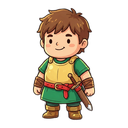
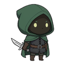

Bran the Bold
Warrior · Free · W1
Tank-frame melee. High HP, universal-tag friendly. Ultimate = Whirlwind (AoE melee burst).
drag to evolve ★1 → ★5 (test render — design-only, not in 2_'s build)
Casual-mobile auto-battler.
The slot-machine is in the forge, not the combat.
playtester build · Stage D 15-wave · Recipe Codex core hook · frozen 2026-06-01


Wittle Defender cohort + the Potion Craft discovery-codex audience. Casual-mobile RPG players who'll happily install an auto-battler but want a strategic decision layer that isn't twitch-combat.
The randomized roll lives in the forge, not the fight. Combat auto-resolves on your weapon's stats and tags. Strategic input — what to buy, what to merge, what tag-combo to chase — happens in a TFT-style parts shop between waves.
TFT parts shop + Potion-Craft-style hidden-recipe discovery + Wittle stage cadence. Each pattern is precedented separately; the combination on a casual-mobile auto-battler is empty space in the 50-game research scan.
Forge weapons.
Discover recipes.
Watch your party fight.
Per addendum 0.1.7 — the Crafting Juice pivot. When the player crafts a weapon whose tag-combo matches an undiscovered recipe (Steamburst = Fire + Ice, Inferno = Fire + Fire, etc.), combat pauses, a full-screen overlay pops the recipe name + effect description, and the codex badge ticks up. The Discovery moment is the dopamine spike the whole loop circles around. Codex has ~200 discoverable recipes at launch; 8 in the 0.1.9 reference build (Steamburst · Inferno · Permafrost · Skewer · Razor Wind · Hellfire · Frostbite · Quickdraw).

Between every wave a TFT-style shop rolls 5 random parts. Buy with round currency. Slot them onto your 3-socket weapon: Head + Hilt + Rune. Reroll for 2🪙. Duplicates merge in place — L1 → L5 with ×1.00 / 1.50 / 2.10 / 2.85 / 3.70 scaling, same-rarity only.
Each part carries tags — element (fire / ice / pierce / lightning / shadow / holy …) + derived (crit / charge). The recipe engine watches your weapon's tag-multiset. The right combo triggers a named effect — Steamburst, Inferno, Razor Wind — and pauses combat for a first-discovery overlay.
Side-view auto-resolve. 1.1s ticks. 3 heroes (Bran W1 → Elara W3 → Vex W6). 15 waves per stage. Bosses on W5 / W10 / W15. Tap a hero's portrait to fire their ultimate when the gauge fills — and the gauge persists across waves. Wipe on a boss = Reforge-&-Retry: keep all parts, swap the build, try again.
h_iron_edge → head slot fills. Buy p_pyro_pommel + r_ice → recipe chip lights up: Steamburst discovered. Combat pauses. Overlay pops. Codex badge 1/2.p_pyro_pommel + r_fire → Inferno discovered. Stacking burn DoT. Codex 2/2.3 free starters drive the FTUE. 12 launch heroes total — Rare / Epic / Legendary via gacha. This is the original design, pre-pivot — the v2.2 lock-the-roster bet plays out in the fork (5_WeaponForge_Honkai_Godot), not here.
Warrior · Free · W1
Tank-frame melee. High HP, universal-tag friendly. Ultimate = Whirlwind (AoE melee burst).
Mage · Free · W3 unlock
Ranged caster. Affinity for Fire / Ice / Lightning / Shadow runes. Ultimate = Meteor (delayed high-damage AoE).
Rogue · Free · W6 unlock
High crit, low HP, fast attacks. Affinity for Bleed / Pierce / Poison. Ultimate = Shadowstep (teleport + guaranteed crit).
Rare · Epic · gacha
Volley (multi-target) · Divine Shield (heal + invuln) · Wildform (transform-rage). Mid-game gacha unlocks.
Epic · gacha
Soul Drain (life-leech AoE) · Bloodlust (self-damage → ATK ramp) · Flurry (multi-hit combo).
Legendary · 1% pull · pity 80
Cataclysm (multi-element ult) · Dragonbreath (line AoE w/ ramp) · Mass Resurrect (echo-clone party).
duplicate-shard merge
Each tier: +5% stats + ult cosmetic upgrade. ★5 = ult cost −50%. ★1 vs ★5 power gap ~1.5×, F2P-at-★1 stays competitive.
All numerical depth lives in the crafting layer. Heroes are roles with distinct ultimates and tag-affinity preferences; stats don't bloat with hero levels. This preserves the gacha-collection hook without forcing the crafting depth to compete with hero power as the meta-progression axis. Per addendum: active-hero priority means buy/equip/merge defaults to the currently-selected hero unless an alternate is explicitly chosen.
┌──────── HOME ────────┐
│ chapter map │
│ 3-hero loadout │
└──────────┬───────────┘
│
▼
┌─── STAGE (15w) ──────┐
│ ┌─ FORGE ────────┐ │
│ │ 5 parts roll │ │
│ │ buy / merge │ │ ← repeats
│ │ recipe check │ │ every
│ └────────────────┘ │ wave
│ ┌─ COMBAT ───────┐ │
│ │ 1.1s ticks │ │
│ │ tap-ult │ │
│ └────────────────┘ │
│ W5 / W10 / W15: boss│
└──────────┬───────────┘
│
wipe? │ → Reforge-&-Retry
▼
┌──── reward ──────────┐
│ +gold +shards │
│ heroes restored │
└──────────┬───────────┘
│
└──→ back to HOME
15 waves. Bosses anchor W5, W10, and the W15 stage-end. Each boss telegraphs an affinity row (weak/resist for fire / ice / pierce / lightning) — the player rearranges their weapon's tag mix to counter. Every enemy in the stage has its own weak/resist roll (per addendum 0.1.5) so the build choice matters wave-to-wave, not just on bosses. On boss wipe, the Reforge-&-Retry modal opens with all inventory preserved — rearrange parts, swap a rune, try again.
Combat tick = TICK_MS = 1100. One Timer. Per tick: each alive hero attacks a random alive enemy; all alive enemies attack the active hero; ult gauges fill (6 + floor(dmg × 0.2) + ultRate/4, capped 100). Hard 30s time-cap forces fill to 100 by fight end. Recipe bonuses (Steamburst splash, Inferno burn-stack) apply inside the tick.
| Recipe | Tag pattern | Effect |
|---|---|---|
| Steamburst | 🔥 + ❄ | 35% splash to all other alive enemies |
| Inferno | 🔥 + 🔥 | same-target hits stack +12% dmg (cap 3 = +36%) |
| Permafrost | ❄ + ❄ | persistent slow aura |
| Hellfire | 🔥 + 🌑 | burning DoT zones at impact |
| Frostbite | ❄ + 📌 | slow + reduced enemy defense |
| Razor Wind | 📌 + 🎯crit | crit chance +25%, crits ricochet |
| Skewer | 📌 + 📌 | line-piercing attack |
| Quickdraw | ⚡charge + (any) | ult charges 50% faster |
Codex grouped into Elemental / Status DoT / Class-signature sections. Undiscovered entries show the effect text but blank out the recipe — "??? makes Steamburst — AoE on hit." Players know what they're hunting; they just don't know how. ~200 launch recipes at full content scope.
Forge-loop concept video — 10s Seedance-Pro render (v3). The full beat-by-beat mockup gallery is on hold while the art set gets a content pass.
10s · Seedance Pro · video mockup
A first-pass cinematic of the forge moment — what the crafting beat should feel like, not yet what the in-engine UI looks like. Replaces the previous 5-image carousel while the static beat captions get revised.
WeaponCraft v1: Robotek × TFT × Potion-Craft. Auto-resolve combat, parts-shop crafting layer, 3-slot weapons (Head / Hilt / Rune), 5-6 waves, 15-character launch.
Port the BASE-A1 HTML prototype's core loop into Godot 4.4 (later 4.6.2 Mono). 1 hero, 5 parts, 2 recipes, 3 waves — prove the pipeline before scaling.
Asset replacement to Bran / Elara / Vex. 3-hero loadout. Juice pass on Stage C (damage pops, screen shake). Cap-fix hardening on edge cases.
15-wave shape shipped. Bosses on W5 / W10 / W15 (Slime King → Iron Golem → Arcane Lich). ReforgeRetryModal on boss wipe. Forge UX balance pass on W10. 144 tests green.
Tag-multiset matching, first-discovery overlay pauses combat, codex state machine (silhouette → discovered → mastered). 8 recipes wired (Steamburst, Inferno, Permafrost, Skewer, Razor Wind, Hellfire, Frostbite, Quickdraw).
Duplicate part purchases level up in place — ×1.0 / 1.5 / 2.1 / 2.85 / 3.7 stat scaling, same-rarity only. Replaces the old 3→1 stash promotion. Active-hero priority on acquire flow.
Design pivot: weapon-gacha + locked 7-hero roster + Honkai-style anime personality. 30+ decisions locked. Design only — never wired in this build.
1197-line competitor research (50 games, 170 Sensor Tower calls). Team-template 101 concept doc (~95% RICOCHET completeness). 5 SSR text artifacts authored.
19 failure modes with mitigations + 7 quarterly threat trackers. Bran 5-tier evolution rendered. Test render — eval gate (FM-19) deferred to fork.
10/10 tests green. get_atk()/get_hp() + ★-tier scaling + Forge Math 3 cases. Built but not yet wired into combat.gd — the migration that prompted the fork.
Snapshot via git archive at commit e958745. This folder = the playtester build. All Phase-1 churn (drop sockets, wire WeaponData, Forge Wheel, Forge Draft, Catalyst, Hot Paladin) continues in the fork.
Plays today (Stage D, shipped): 3 heroes (Bran/Elara/Vex, unlock W1/W3/W6) · 15 waves · bosses W5/W10/W15 · Reforge-&-Retry on boss wipe · legacy 3-socket forge (head/hilt/rune TFT shop + part-level merge L1-L5) · Recipe Engine + Codex with first-discovery overlay · tap-portrait ultimates with persistent ult gauge · per-enemy weak/resist affinities.
NOT yet built (design-only — see fork): Forge Wheel slot-machine pulls · weapon-gacha · locked 7-hero roster · Forge Draft 3-card · Catalyst compounds · Hot Paladin Stage-2 cinematic · hero personal-mission quests · portrait evolution wired into gameplay. WeaponData exists in code (10/10 tests) but the legacy socket weapon is what combat actually reads.